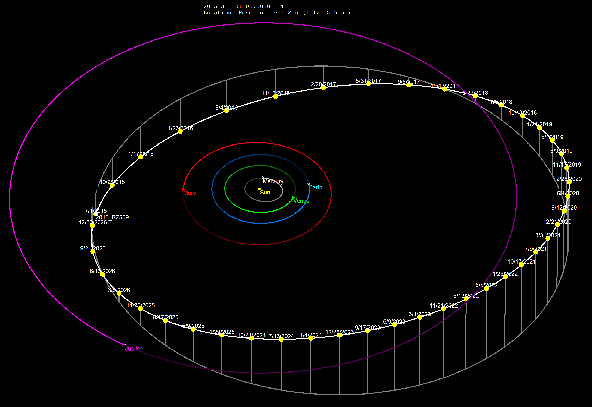
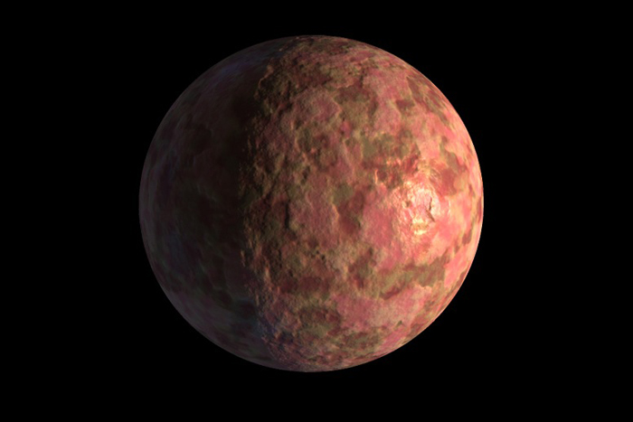
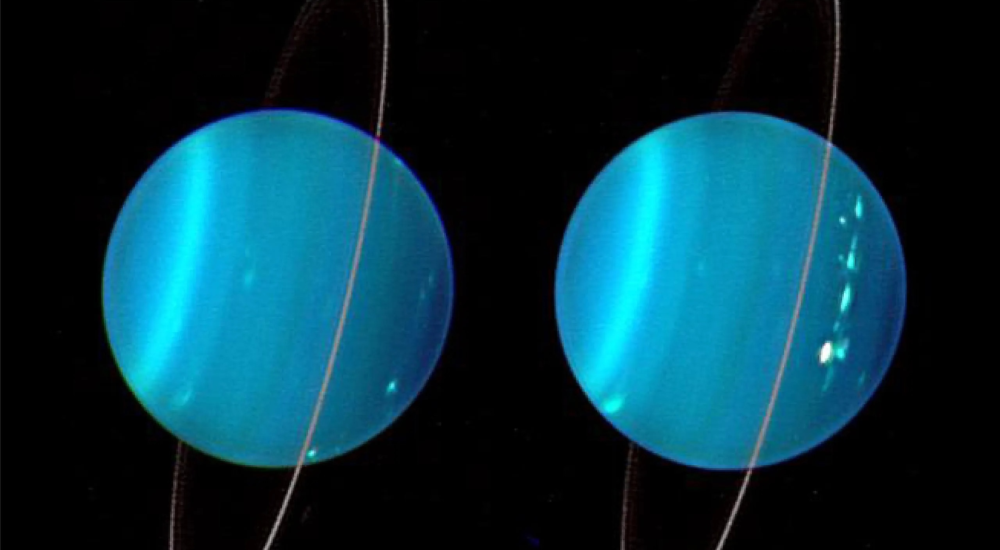
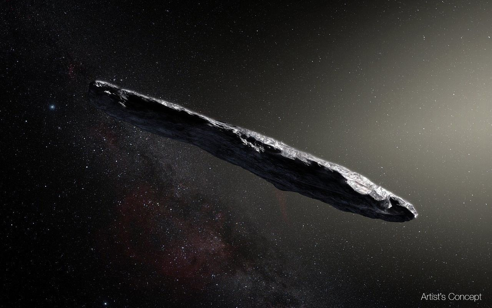

Most objects in our solar system orbit in the same direction. The reason why has to do with how the Solar System formed. It used to be just a ball of gas that slowly collapsed in on itself, forming a protostar at the core. As time went on, the dust and gas began to orbit that star, slowly clumping together and forming larger and larger celestial objects. Most of our modern solar system now orbits in the same direction due to that phenomenon… but not Ka'epaoka'āwela, a small asteroid. It orbits in the complete opposite direction. How is that possible? The current theory among scientists is that it was likely captured from another star system, making it a foreign object - kind of like an alien to our world of space rocks. Below, you can see the orbit it follows.

Sedna is a dwarf planet, much like Pluto. Yet what makes it so strange is how far it is from the Sun. At its farthest point, it is 87 billion miles away, and it takes it almost twelve thousand years to orbit the Sun! It also has a highly elliptical orbit, allowing it to reach deep into the outer edges of space, much farther than normal planetary bounds, and then return to a relatively close distance. However, Sedna will be closest to the Sun in 2076, so scientists have a unique opportunity to study it while they can, because then they'll have to wait thousands of years to get the same opportunity.

Uranus is a long friend of ours; it's the seventh planet in the Solar System. How in the world could it be weird?! I am so glad you asked! Uranus's orbit is vastly different from those of the other seven planets. It's tipped to its side, meaning instead of rotating around, it rotates on its side. Scientists believe it was likely caused by a massive collision with an Earth-sized object or the gravitational influence of a long-lost moon. The Solar System has a pretty mysterious history.

'Oumuamua has a very similar story to Ka'epaoka'āwela, yet there is one specific thing that makes it completely different and exciting for scientists: it's actively passing through our solar system. It's not going to stay forever. It is a lone object that has enough velocity to where the Sun cannot catch it and put it into orbit. It really is a visitor in our solar system. Fun fact: scientists initially thought it might have been an alien UFO passing by us on some cosmic journey.

As we ponder the strange objects that we share a star with, make sure to stay curious and orbital.